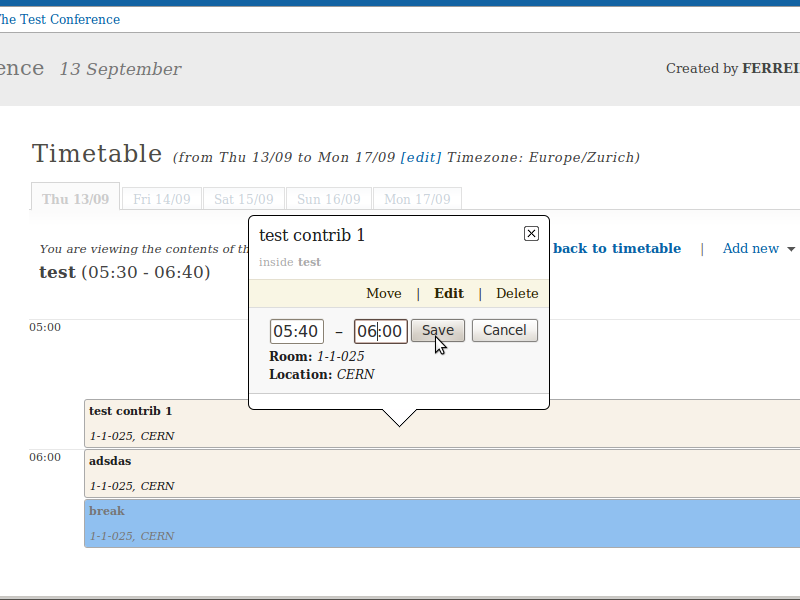
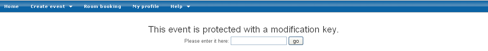
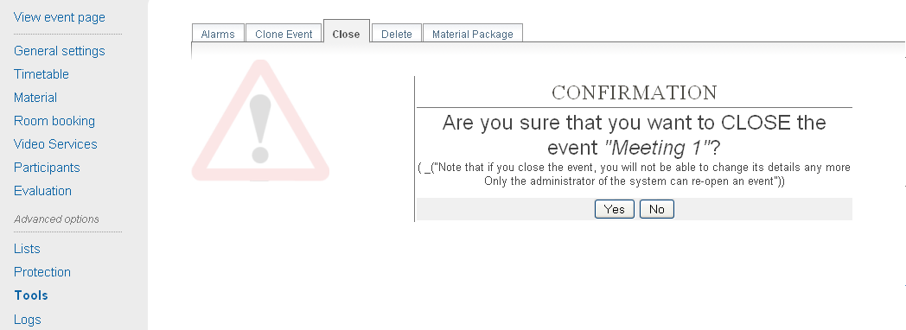

Chapter 3. Meetings¶
3.1. Meeting¶
A Meeting is not as in depth as a Conference and is made for smaller events. Within a Meeting you can find two main modules:
- Participants: you can add all the participants for the Meeting or you can open the participation so users can apply for it.
- Timetable: in which you can directly add Sessions, Contributions, and Breaks.
As well, as for conferences, you can set the Access Control for the meeting and you have Tools in which you can remove, clone, and set alarms.
3.2. Creating a Meeting¶
If you have the correct access rights within a Category you can create a new meeting using the blue top bar Create event option. You will be presented with a form similar to that for a Conference; you are able to choose the default style in which the Meeting will be displayed (see Meeting Display Area). When you submit this form the Meeting will be created and you will be redirected to its Management Area.
3.3. Meeting Management Area¶
The Management Area allows you to control the different parts of your meeting. The following sections will show each area of the Meeting Management.
Clicking on the link View event page will take you to the management display area for the meeting.
3.3.1. General Settings Management¶
From the Main tab, you are able to modify the details of the meeting including title, description, location, default style of the display. You can also add/remove any chairpersons.

3.3.1.1. Meeting Visibility¶
This option allows you to choose up to which level your meeting will be visible in the overview pages.
3.3.2. Timetable Management¶
The Timetable Management allows you to organize your meeting by using sessions (groups of contributions), contributions (presentations), and breaks.
The management of the timetable is the same as for conferences. The only difference is while adding contributions. In conferences, you can add unscheduled contributions to the timetable. On the other hand, in meetings, unscheduled contributions don’t exist, you need always to create the contribution.
Here, we will just explain how to create contributions. For more details and further explanations about the Timetable Management (see Timetable Management for Conferences).
3.3.2.1. Adding Contributions¶
You can directly add contributions into your timetable using the Add new > Contribution at the top of the timetable. This will open a pop-up with a form to create a new contribution.

Within this form, you can define the name, description, location, presenters, and the starting time and duration of this contribution.

In order to edit the contribution, you can click on it and a edition balloon will show up. In this balloon, you can modify the timing or the whole contribution.
3.3.2.3. Session Management¶
3.3.2.4. Contribution Management¶
3.3.3. Protection Management¶
Protection in a meeting is the same as that in a Conference. There is Modification Control, Domain Control, and Access Control. When adding to the Access and Modification lists, you can also add Groups of users if any have been defined by Administration.
Modification Control Only the managers listed in the modification control, the creator of the meeting, and any administrators can access the Management Area of the meeting. However, you can add a Modification Key which means anyone with this key can modify the meeting without logging in.

Access Control When the meeting is public, anyone can view the meeting including the details, timetable, material, etc. When the meeting is private, only those in the access list, meeting managers, and administrators can view the meeting.

When private you can also add an Access Key which means anyone with this key can access the meeting without logging in.
Domain Control This is available for public meetings. It allows you to specify which domain can access the meeting. For instance, people from inside the CERN domain can access.
Material Visibility By default a material will always be visible in the timetable, even if it is private (the user will be redirected to a login screen or access key prompt when clicking on it). You can force the material to be hidden for non-authorized people by using the Visibility to unauthorized users section in the material access control page.
3.3.4. Tools Tab¶
The meeting Tools allow you to make certain actions on the whole of the meeting. See following sub-sections.

3.3.4.1. Deleting a Meeting¶
The Delete meeting option will delete the whole meeting. You will be asked to confirm deletion beforehand.

3.3.4.2. Cloning a Meeting¶
Clone the meeting if you would like to make another meeting exactly the same. You have the option to clone it once, at fixed intervals, or on certain dates.

3.3.4.3. Packaging Material¶
Using the Material package option you can create a package of all the materials that have been used in the meeting.

3.3.4.4. Alarm Control¶
You can set an alarm/reminder to alert people about the meeting. The alert will be in the form of an email, and in the date that you have selected.

3.4. Meeting Display Area¶
The Meeting Display is the view that users of the meeting will see. If the meeting is public they will not need to log in to view the meeting. It is also the area in which you can access the modification areas if you have access rights. There are various views/styles in which the meeting can be displayed; the following sections show the different views and displays.
3.4.1. Indico Style¶
This is the default view for meetings in Indico. If you have
modification rights to any parts of the meeting you will be able
to access the Management Area by clicking the icon  .
.